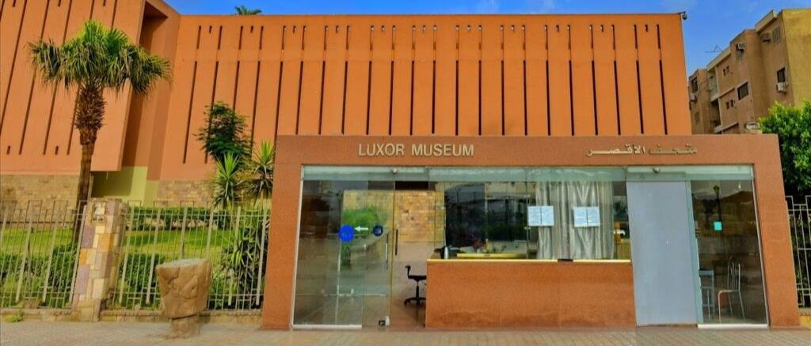

A window into the treasures of ancient Thebes
Luxor Museum is one of Egypt’s finest museums, located on the east bank of the Nile. It displays a carefully selected collection of artifacts from ancient Thebes, offering a clear and elegant presentation of Egypt’s history.
Discover the beauty of ancient Thebes in Luxor!
Book Now